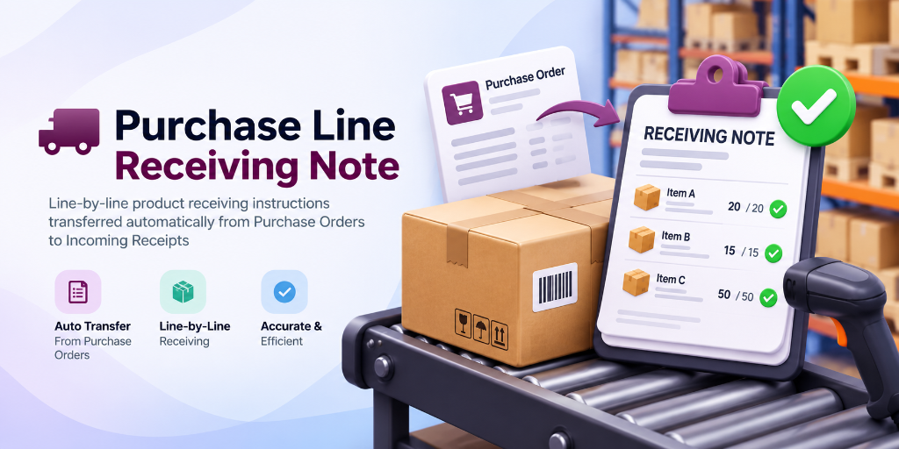

Purchase Line Receiving Note
The Purchase Line Receiving Note module allows purchasing teams to add specific, product-level receiving instructions directly onto Purchase Order lines. When a Purchase Order is confirmed, these instructions automatically copy to the corresponding incoming stock moves (`stock.move`).
Warehouse staff can view these receiving instructions as read-only notes on the incoming receipt screen. Instructions remain preserved even when partial receipts create backorders.
Key Advantages
Module Features
Detailed breakdown of Purchase Line Receiving Note features
PO Line Receiving Note Field
Add optional receiving instructions on Purchase Order lines in both list and form views.
Automatic Stock Move Transfer
Instructions seamlessly copy to corresponding incoming stock moves upon PO confirmation.
Read-Only Receipt View
Warehouse personnel view receiving notes as read-only fields on incoming receipts.
Backorder Note Preservation
Partial receipts copy receiving instructions onto generated backorders automatically.
Audit & Historical Integrity
Original receipt move notes remain unchanged if PO line notes are modified later.
Standard Flow Compatibility
100% compatible with standard Odoo inventory valuation, reservation, and picking validation.
Workflow & Screenshots
Step-by-step demonstration of receiving instructions flow
Go to Purchase → Orders → Purchase Orders. Add product-wise instructions under the "Receiving Note" column on Purchase Order lines.

Upon PO confirmation, opening the incoming receipt displays the receiving notes as read-only fields on each stock move line.

Validating a partial receipt preserves and carries forward the line receiving instructions onto the generated backorder receipt.

Frequently Asked Questions
Is the receiving note editable on the incoming receipt?
No. The receiving note on stock moves is read-only for warehouse staff to prevent accidental alteration of purchasing instructions.
What happens when a partial receipt generates a backorder?
The receiving note is automatically copied to the backorder stock move, ensuring receiving instructions remain available for remaining items.
Does modifying the PO line note after confirmation update existing moves?
No. Original receipt stock moves preserve the instructions captured at PO confirmation time, maintaining historical integrity.